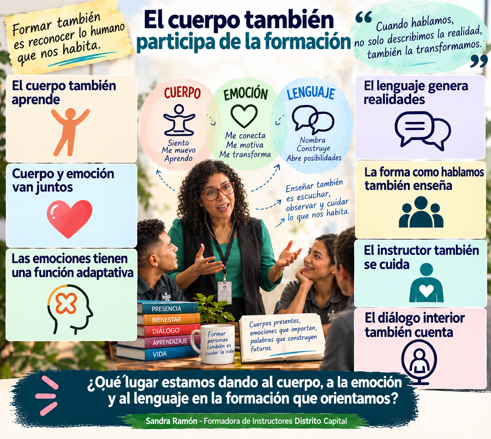
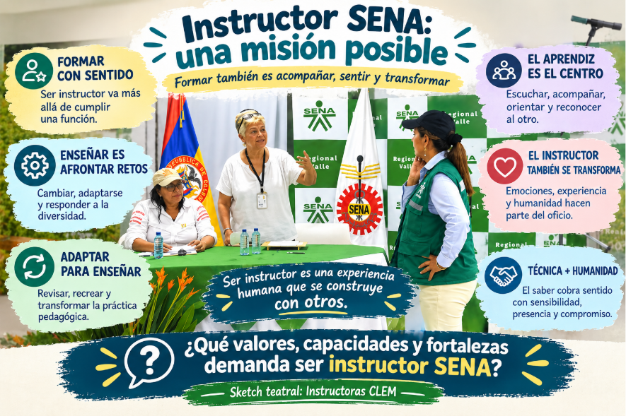
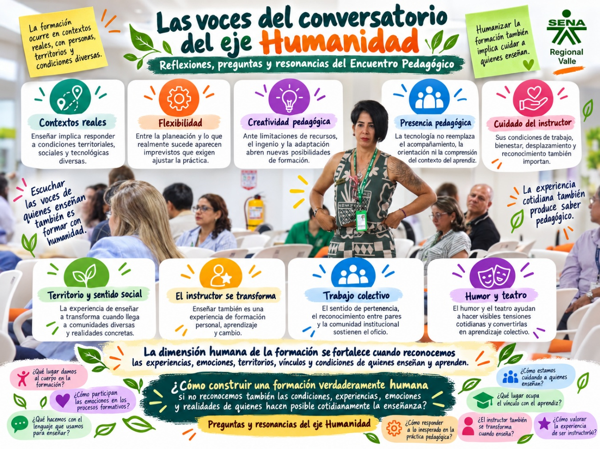

Eje Humanidad
5. Eje Humanidad: cuerpo, emoción, lenguaje y experiencia de ser instructor(a)
Cuerpo, emoción y lenguaje, el ejercicio teatral y las preguntas que surgieron sobre la experiencia de ser instructor(a).
5. Eje Humanidad: cuerpo, emoción, lenguaje y experiencia de ser instructor(a)
Del diálogo y reflexión acerca de la tecnología y sus desafíos, el Encuentro avanzó hacia una dimensión orientada al ser: reconocer que enseñar y aprender también ocurren en el cuerpo, en la emoción y en la experiencia vivida.
5.1. El cuerpo también participa de la formación
En la intervención de Esp. Sandra Ramón, el Eje Humanidad pasa la mirada hacia una dimensión que puede quedar relegada cuando pensamos la formación únicamente desde los contenidos o las competencias: enseñar y aprender son experiencias que comprometen al cuerpo, las emociones y el lenguaje. Ella plantea las siguientes argumentos.
- El cuerpo también aprende y participa de la formación. El cuerpo no aparece simplemente como el soporte físico de quien aprende. La postura, el movimiento, las expresiones faciales, el descanso y los hábitos corporales se relacionan con la manera como las personas perciben, sienten y se disponen para aprender.
- Tomar conciencia del cuerpo amplía nuestra capacidad de observarnos. La ponencia llama la atención sobre señales corporales que con frecuencia pasan inadvertidas. Indica que reconocer sensaciones internas, postura, equilibrio, cansancio o tensión permite comprender mejor lo que ocurre con nosotros mismos y con quienes participan en los ambientes de aprendizaje.
- Cuerpo y emoción están permanentemente relacionados. Plantea que las emociones se manifiestan corporalmente y que estados como el estrés pueden incidir en la disposición para adquirir nuevos conocimientos.
- Las emociones no deben clasificarse simplemente como buenas o malas. La presentación indica que el reto consiste en aprender a reconocerlas y gestionarlas. Resalta la importancia de capacidades como el reconocimiento de las propias emociones, el autocontrol, la automotivación, la empatía y el manejo de las relaciones interpersonales.
- El instructor también necesita observarse y cuidarse. La reflexión no está dirigida únicamente hacia los aprendices. La ponente devuelve constantemente la pregunta al propio instructor: cómo está su cuerpo, cómo gestiona sus emociones, qué expresan sus gestos y cómo puede estar siendo leído por los demás.
- El lenguaje no solamente describe la realidad. También actúa sobre ella. Una de las ideas centrales de la intervención es el carácter generativo del lenguaje. Cuando hablamos hacemos cosas: pedimos, prometemos, ofrecemos, afirmamos y declaramos.
- La manera como hablamos con los aprendices tiene consecuencias pedagógicas. Pedir con claridad, cumplir lo prometido, realizar ofertas pertinentes y ser cuidadosos con aquello que declaramos sobre una persona forman parte de la relación educativa.
- También importa la conversación que mantenemos con nosotros mismos. La ponencia incorpora el diálogo interior como parte de la dimensión del lenguaje.

La línea transversal de la ponencia podría expresarse así: formar integralmente supone aprender a observar y cuidar aquello que ocurre en el cuerpo, en la emoción y en el lenguaje, porque estas tres dimensiones participan activamente en la experiencia de enseñar y aprender. Y la inquietud que queda nos lleva a cuestionarnos así: ¿Qué lugar estamos dando al cuerpo, a la emoción y al lenguaje en la formación que orientamos, y qué tendría que cambiar en nuestra práctica si realmente los reconociéramos como parte del aprendizaje?
5.3. Sketch teatral “Instructor SENA: crónicas de una misión posible”
Del sketch teatral “Instructor SENA: crónicas de una misión posible”, su puesta en escena propone los siguientes planteamientos centrales:
- Ser instructor(a) va más allá de cumplir una función: implica asumir una misión formativa con sentido humano y social.
- Enseñar supone afrontar tensiones cotidianas: cambios, exigencias institucionales, diversidad de aprendices y desafíos propios de la práctica.
- El vínculo con los aprendices da sentido al oficio: acompañar, escuchar, orientar y reconocer al otro hacen parte de la formación.
- El instructor también es una persona que siente y se transforma: enseñar compromete emociones, cuerpo, experiencia y trayectoria personal.
- La práctica pedagógica exige adaptación permanente: el instructor debe revisar, recrear y ajustar continuamente su manera de enseñar.
- Lo técnico y lo humano se encuentran en el oficio de formar: el saber ocupacional adquiere sentido cuando se articula con sensibilidad, presencia y compromiso.
En conjunto, el ejercicio teatral invita a reconocer que ser instructor(a) es una experiencia humana compleja, construida en la relación con los aprendices, las dificultades cotidianas y el sentido que se atribuye a la tarea de formar. Como cuestionamiento central el ejercicio nos deja la invitación a reflexionar: ¿El ser instructor SENA demanda unos valores, capacidades y fortalezas particulares?, ¿Cuáles?

5.4. Las voces del conversatorio del eje Humanidad
Los aportes de instructores, asistentes y moderadores complementan las reflexiones de las ponencias y acercan la discusión a la experiencia cotidiana de ser instructor(a) así:
- La formación ocurre en contextos reales: enseñar implica responder a condiciones territoriales, sociales y tecnológicas diversas.
- La práctica exige flexibilidad: entre la planeación y lo que realmente sucede siempre aparecen imprevistos.
- La creatividad del instructor es clave: ante limitaciones de recursos, surgen soluciones pedagógicas basadas en el ingenio y la adaptación.
- La tecnología no reemplaza la presencia pedagógica: lo central sigue siendo acompañar, orientar y comprender el contexto del aprendiz.
- Humanizar la formación también implica cuidar al instructor: sus condiciones de trabajo, desplazamiento, bienestar y reconocimiento también importan.
- El territorio transforma la experiencia de enseñar: la labor del instructor adquiere un fuerte sentido social cuando llega a comunidades diversas.
- El instructor también aprende y se transforma: enseñar es, al mismo tiempo, una experiencia de formación personal.
- El sentido de pertenencia y el trabajo colectivo sostienen la labor: el reconocimiento entre pares y la comunidad institucional fortalecen el oficio.
- El humor y el teatro permiten reflexionar sobre la experiencia: ayudan a hacer visibles tensiones cotidianas y convertirlas en aprendizaje colectivo.
Surge entonces una pregunta que resuena en el Eje Humanidad: ¿Cómo construir una formación verdaderamente humana si no reconocemos también las condiciones, experiencias, emociones y realidades de quienes hacen posible cotidianamente la enseñanza?
5.5. Preguntas y resonancias del eje Humanidad
El Eje Humanidad deja abiertas preguntas que desplazan la reflexión desde los contenidos y las herramientas hacia la experiencia concreta de ser instructor(a), relacionarse con los aprendices y habitar la formación con el cuerpo, la emoción y el lenguaje. Veamos:
- ¿Qué lugar damos al cuerpo en la formación?
- ¿Reconocemos que postura, movimiento, cansancio, presencia y bienestar influyen en la manera de enseñar y aprender?
- ¿Cómo participan las emociones en los procesos formativos?
- ¿Sabemos reconocerlas y gestionarlas como parte de la experiencia educativa?
- ¿Qué hacemos con el lenguaje que usamos para enseñar?
- ¿Nuestras palabras abren posibilidades, fortalecen al aprendiz y construyen confianza, o pueden terminar limitándolo?
- ¿Cómo estamos cuidando a quienes enseñan?
- ¿Qué lugar ocupa el vínculo con el aprendiz?
- Más allá de transmitir conocimientos, ¿cómo acompañamos, escuchamos y reconocemos las historias y necesidades de quienes se forman?
- ¿Cómo responder a lo inesperado en la práctica pedagógica?
- ¿Cómo sostener la dimensión humana en medio de la tecnología y las exigencias institucionales?
- ¿El instructor también se transforma cuando enseña?
- ¿Cómo hacer visible y valorar la experiencia de ser instructor(a)?
En conjunto, el Eje Humanidad deja una pregunta transversal: ¿Cómo construir una formación verdaderamente integral si el cuerpo, las emociones, el lenguaje, el cuidado y los vínculos no ocupan un lugar central en nuestra manera de enseñar y aprender?
